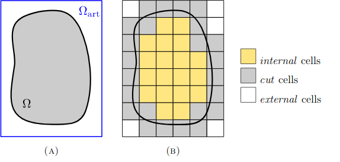
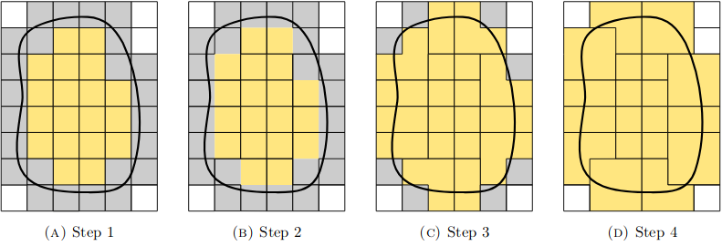

Aggregated Unfitted FEM’s documentation!¶
Motivation¶
The finite element method is a common way to numerically solve differential equations: One generates a mesh on the physical domain \(\Omega\) of the function space and restricts the function space to the H1 space associated to that mesh which is in the simplest case defined to have one basis function per mesh vertex which is defined in a way that it is zero on all other vertices and has compact support around that vertex. Solutions of differential equations can then be formulated as the f in H1 such that \(L(f, g) = K(g)\) for all g in H1 with a fixed bilinear form L and a linear form \(K\). By computing \(K\), and \(L\) on all basis functions the differential equations then become linear equations of the form \(A u = b\).
Often it is difficult to find a good mesh for a given space \(\Omega\) but easy to generate mesh on a larger space \(\Omega_{art} \supset \Omega\) . Using the same method as described before is still possible and is in this case called the unfitted finite element method. However, these techniques are prone to severe ill conditioning problems that obstruct the efficient use of iterative Krylov methods and, in consequence, hinders the practical usage of unfitted methods for realistic large scale applications. The work by Badia, Verdugo and Martin presents a technique which we implement, called the aggregated unfitted finite element method, that addresses such conditioning problems by constructing enhanced finite element spaces based on a cell aggregation technique. The mathematical analysis of the new method states that the condition number of the resulting linear system matrix scales as in standard finite elements for body-fitted meshes, without being affected by small cut cells, and that the method leads to the optimal finite element convergence order.
For most of the unfitted FE techniques, the condition number of the discrete linear system does not only depend on the characteristic element size of the background mesh, but also on the characteristic size of the cut cells, which can be arbitrary small and have arbitrarily high aspect ratios. The main goal of this work is to implement this enhanced unfitted FE formulation that fixes the problems associated with cut cells. The algorithm does achieve condition numbers that scale only with the element size of the background mesh in the same way as in standard FE methods for body-fitted meshes.
Implementation¶
Starting form the H1 space, the algorithm eliminates from this space all the potentially problematic DOFs by introducing a set of judiciously defined constraints. These constraints are introduced using information provided by mapping exterior verticies to close inner cells, without altering the conformity of the original FE space. Alternatively, the method can be understood as an extension operator from the interior (well-posed) FE space that only involves interior cells to a larger FE space that includes cut cells and covers the whole physical domain.
The first step of the method is to build a computational mesh on the artificial domain \(Ω_{art}\) such that it has simple geometry that is easy to mesh using Cartesian grids and it includes our physical domain \(Ω\subset Ω_{art}\). As we create the mesh, some of the or cells are cut in the boundary of the physical domain. These are noted as cut cells: ci.GetElementsOfType(IF)(), while the cells outside of the physical domain are given by ci.GetElementsOfType(POS)() and these inside the physical domain from ci.GetElementsOfType(NEG)(). The first three pictures show an example of the 3 different cell properties on the level set:
lvlset = \(\sqrt{ \sqrt{x^4+y^4} -1}\) which defines \(Ω\) by: \(Ω = \{ x \in Ω_{art} | \text{lvlset}(x) < 0 \}\) The following images show the cut, inside and outside cells respectively:
{kind=link}
{kind=link}
{kind=link}
The following figures show another example of a physical domain \(Ω\) inside \(Ω_{art}(A)\), and the internal, cut and external cells summarized (B).

For the second step, after we have distincted which elements are inside, outside and cut, the algorithm includes information about the adjacency of every cut cell to its closest interior cell (ref. cluster_info) defined by a distance (=the smallest number of cells needed for every cut cell to reach one interior cell) and it creates a cluster by grouping all cells that were mapped to the same inner cell.
The following image shows exactly one cluster, where the blue one inside is the inner cell and the greens are the cells cut by the boundary and clustered with the blue:
{kind=link}
In detail, we are starting with the interior cells and iteratively adding adjacent cut cells to it. This continues until all cut cells are clustered with an interior (and possibly other cut cells). This process can be shown in the below four steps.
{kind=link}
Given a grid on an artificial domain, the \(H^1\) space on the grid is defined as the function space spanned by all functions of the following type:
Let \(z_{i,j} = (x_i, y_j)\) denote the vertices of our grid. Let h be the height (which is for now assumed to be the same as the width) of each sqare in our grid \((h = x_{i + 1, j} - x_{i, j})\) for each i, j. We define
\(\phi_{i, j}(x, y) = \begin{cases} (x-x_{i-1}) (y-y_{j-1}) /h^2 &\quad\ (x, y)\in [x_{i-1},x_i] \times [y_{j-1},y_j]\\ (x-x_{i-1}) (y_{j+1}-y) /h^2 &\quad\ (x, y)\in [x_{i-1},x_i] \times [y_j,y_{j+1}]\\ (x_{i+1}-x) (y-y_{j-1}) /h^2 &\quad\ (x, y)\in [x_i,x_{i+1}] \times [y_{j-1},y_j]\\ (x_{i+1}-x) (y_{j+1}-y) /h^2 &\quad\ (x, y)\in [x_i,x_{i+1}] \times [y_j,y_{j+1}]\\ 0 &\quad\ \text{otherwise} \end{cases}\)
then those \(\phi_{i, j}\) are the basis functions of our \(H^1\) space and each of them is associated to the vertex \(z_{i,j}\) in the obvious way. As each of the basis functions is 0 on all other vertices and 1 on the vertex associated to it, we have for each function \(u\) in our \(H^1\) space: \(u(z) = \sum_{i, j}^{N+1} u(z_{i, j}) \phi_{i, j}(z)\).
The following image shows such a function \(\phi_{i, j}\) associated to a vertex at (0,0) when \(h\) is 1:
{kind=link}
By classifying our degrees of freedom in 3 types: inner, exterior and unused the vector describing out trial functions has the form:
\(u = (u^{in}, u^{ext}, u^{unused})\),
{kind=link}
where \(u^{in}\) corresponds to the degrees of freedom associated to the inner vertices, \(u^{ext}\) to the vertices adjacent to a cut cell but not an inner cell, and \(u^{unused}\) the rest of the vertices. The algorithms now restricts our solutions to those where \(u^{ext}\) is of the form \(u^{ext} = T u^{in}\), where \(T\) is linear. More specifically for each exterior degree of freedom we selected a close inner cell (using the base cell of the clustering), and define \(u_i\) to be the value of the continuation of the function in the cell given the values of the function on the corners of that interior cell.
{kind=link}
where \(N^{out}_h\) are the outer nodes.
In conclusion, we reduce the problem \(Au = b\), by imposing restriction to the solution given by what is given in the paper resulting in:
\({\tilde{C^T}}A \tilde{C} = \tilde{C^T} b\), where \(\tilde{C} = (I, T, 0)^T\), with \(T\) being the matrix that maps the degress of freedom in Nin to the degress of freedom of Nout. Generating the Matrix \(C\) is the aim of the algorithm and the file last_step implements a method that returns the coefficients of the matrix \(\tilde{C}\) given by index to value pairs (all other coefficients will be 0). The implementation of this method is different depending on whether we have a grid or or a mesh consisting of simplicies.
Result and Outlook¶
In the notebook square_test we tested the algorithm using a simple poisson equation on a circular physical domain on a N times N square Grid and compared the results of this new method to the results of the old method, the results are shown in the following table:
| N | Error Old | Cond Old | Error New | Cond New |
|---|---|---|---|---|
| 8 | 0.041436 | 3.9 * 10^7 | 0.096531 | 1.8 * 10^3 |
| 10 | 0.026746 | 2.7 * 10^8 | 0.080747 | 5.8 * 10^3 |
| 15 | 0.012055 | 1.1 * 10^4 | 0.032030 | 1.3 * 10^4 |
| 20 | 0.006842 | 1.0 * 10^9 | 0.014049 | 2.9 * 10^4 |
| 30 | 0.003062 | 1.1 * 10^9 | 0.005649 | 9.6 * 10^4 |
| 100 | 0.000278 | 1.4 * 10^14 | 0.000363 | 1.3 * 10^6 |
The new method in the tested case above had an error which was between 2 and 3 times larger than the old method but has a much better and well behaved condition number.
A possible next step would be to make sure the algorithm also for 3D meshes, we tried to write it in a way to be as compatible as possible to the 3D case, but it was not tested.
Another possible thing to do could be to check whether the algorithm could be extended to other function spaces than to H1 of order 1.
The ad_info module¶
The ad_info module below gives a new class with information about adjacent faces. Specifically it gives info about:
- The connection of vertices and faces.
- A list of adjacent faces.
- Adjacent faces of a vertex.
- Two test functions to see in the mesh any adjacent faces or adjacent faces of a vertex.
-
class
ad_info.AdInfo(mesh)[source]¶ Information about which faces are adjacent.
-
build_f2f()[source]¶ Gathers information about connection between edges to faces first, and faces to faces afterwards in the mesh. A helper function for the constructor, don’t call manually.
-
build_v2f()[source]¶ Gathers information about connection between verticies to faces in the mesh. A helper function for the constructor, don’t call manually.
-
get_ajacent_faces(face_index)[source]¶ Function that gives list of adjacent faces of a face. Args: face_index (int): Index of the face
Returns: Adjacent faces.
-
get_vertex_ajacent_faces(vertex_index)[source]¶ Function for the adjacent faces of a vertex. Args: vertex_index (int): Index of the vertex
Returns: Adjacent faces of the vertex.
-
The cluster_info module¶
This is the basic module of the algorithm to build the clusters. Firstly, it defines a new class to generate the clusters and another function to give the distance between the cells. The idea is to build a cluster between an inner cell and neighbour cut cells having the smallest distance. There are also two functions defined for the visualization of clusters created.
-
cluster_info.copy_bitarray(a)[source]¶ Creates a copy of a BitArray structure
- Args:
- a (BitArray):
- Returns:
- BitArray, A copy of a
-
class
cluster_info.CusterInfo(ad_info, cut_info)[source]¶ Class to generate the clusters when doing unfitted FEM
-
__init__(ad_info, cut_info)[source]¶ Constructor
- Arguments:
- ad_info (AdInfo):
- Usually created via AdInfo(mesh), where mesh is cut_info.Mesh()
- cut_info (CutInfo):
- The cut info to which to compute the clusters.
-
distance_cell_to_cell(f_id1, f_id2)[source]¶ Helper method to compute the distance of two elements, just computes the distance between the middlepoints of the two elements.
- Args:
- f_id1 (int):
- The index of the first Element
- f_id2 (int):
- The index of the second Element
- Returns:
- float. The distance of the two Elements
-
GetFacesOfType(t)[source]¶ wrapper for cut_info.GetElementsOfType that uses the same ordering as used by mesh[NodeId(FACE, id)]
-
build_clusters()[source]¶ Helper method to do the actual work, only called by the constructor of this class
-
get_cluster(face_id)[source]¶ Returns the id of the cluster the Element belongs to, that id is the same as the Element id of the single uncut element in that cluster.
- Args:
- face_id (int):
- The index of the element
- Returns:
- int. The index of the cluster.
-
draw_clusters_inone()[source]¶ Tries to draw all clusters in one image. Due to the limited number of colors, this will not always work very well.
-
draw_cluster(f_id)[source]¶ Draws the cluster with the given id, that is the id of the unique uncut element in that cluster
- Args:
- face_id (int):
- The index of the element
-
draw_clusters()[source]¶ Draws all calculated clusters, each in a diffent image named ‘“cluster<custer_id>(<custer_size>)’
-
The last_step module¶
The last step is to interpolate vertices on differnet mesh types, e.g. 2D squares, 2D simplices, 3D simplices, 3D squares. The 3D case is not tested.
-
class
last_step.VertexCoefficient(vertex_id, coefficient)[source]¶ Class that contains information about which coefficients are associated to which vertex when interpolating a certain vertex.
Attributes:
- vertex_id (int):
- the index of the Vertex
- coefficient (float):
- the associated coefficent
-
class
last_step.LastStep(mesh, cut_info)[source]¶ Class to interpolate vertices
-
__init__(mesh, cut_info)[source]¶ Constructor
- Args:
- mesh (Mesh):
- a netgen 2d mesh object for which we want to compute
- cut_info (CutInfo):
- the cut info to which to compute the clusters.
-
get_coefficients(vertex_id, face_id)[source]¶ Calculates the coeffients to interpolate the vertex using an H1 function of order 1 on the given Element. Assumes a 2D space with square Elements.
Args:
- vertex_id (int):
- The index of the vertex that will be interpolated
face_id (int): the index of the element where the H1 function is on
- Returns:
- list of VertexCoefficient.
-
do_squares_2D(vertex_id, face_id)[source]¶ Calculates the coeffients to interpolate the vertex using an H1 function of order 1 on the given Element. Assumes a 2D space with square Elements.
- Args:
- vertex_id (int):
- The index of the vertex that will be interpolated
- face_id (int):
- The index of the element where the H1 function is on
- Returns:
- list of VertexCoefficient.
-
do_simplices_2D(vertex_id, face_id)[source]¶ Claulates the coeffients to interpolate the vertex using a H1 function of order 1 on the given Element. Assumes a 2D space with triangular Elements.
- Args:
- vertex_id (int):
- The index of the vertex that will be interpolated
- face_id (int):
- The index of the element where the H1 function is on
- Returns:
- list of VertexCoefficient.
-
The ad_info_test.ipynb notebook¶
Tests the AdInfo and CusterInfo classes
The square_test.ipynb notebook¶
The notebook that runs all the modules, shows the clusters, clulcates the solution, By default it tests the algorithm on a aquare grid but it can also be changed to testing a simpled mesh.
The strange_behaviour_test.ipynb notebook¶
This file documents all unexpected behvior of the netgen/ngsolve library that caused us the most problems during the implementation.
Literature¶
| Santiago Badia, Francesc Verdugo, Alberto F. Martin | The aggregated unfitted finite element method for elliptic problems | 2017 |
| https://www.sciencedirect.com/science/article/pii/S0045782518301476 |